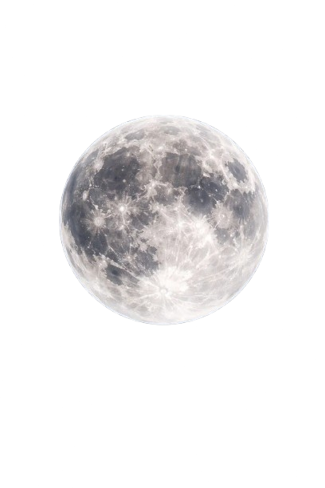

LunarMatch-X aligns Chandrayaan-2 OHRC, TMC-2 and IIRS scenes to LRO NAC and SELENE TC references using SPICE geometry, DEM-aware deformation and an ensemble of learned matchers — then gates every product on coverage, residual tail and stability before it leaves the pipeline.

Sensor, band structure, shadow fraction, illumination and crater density are measured from the pixels before any matching is attempted.
Archive footprints, ray–DEM intersection and Hapke photometry put both images on a common, physically meaningful grid.
SuperGlue, LightGlue, MINIMA and RIFT2 candidates are fused, verified with MAGSAC++ and refined to sub-pixel with relief-aware deformation.
Uncertainty maps, coverage and perturbation stability gate every output — with reason codes when the pipeline declines.
Every artefact is written from this run and traceable through the manifest.